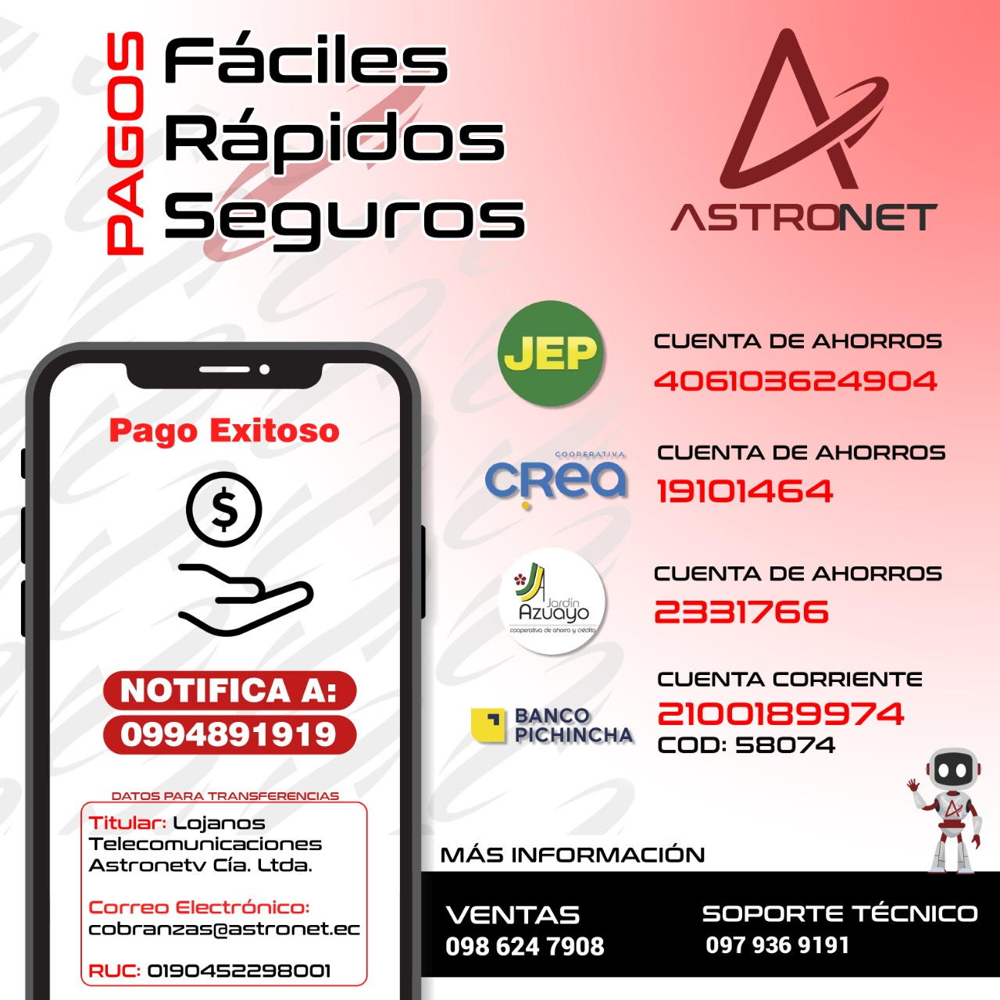

Aviso de Suspensión de Servicio Por Falta de Pago
Estimado Cliente,
Lamentamos informarle que su servicio de internet ha sido suspendido temporalmente por falta de pago.
Le recordamos que nuestra política de corte se efectúa al tener pendiente de pagar dos mensualidades.
Para reactivar su servicio:
- Realice su pago en el canal de su preferencia. 
- Adjunte el comprobante de pago a Quito - 099 030 8529 | Cuenca - 0997347234.
- Con el pago registrado, su servicio se reconectará automáticamente.
Si necesita asistencia o tiene alguna pregunta, no dude en ponerse en contacto con nuestro equipo de cobranzas, al número Quito - 099 030 8529 | Cuenca - 0997347234.
Consejos para Evitar Futuras Suspensiones:
- Recuerda que debes realizar tus pagos del 1 al 5, de cada mes. Puedes configurar recordatorios de pago.
- Actualice sus números de contacto registrados para poder realizar la notificación de esta deuda antes de efectuar la suspensión.
- Notifica tus pagos realizados por medio de entidades bancarias.